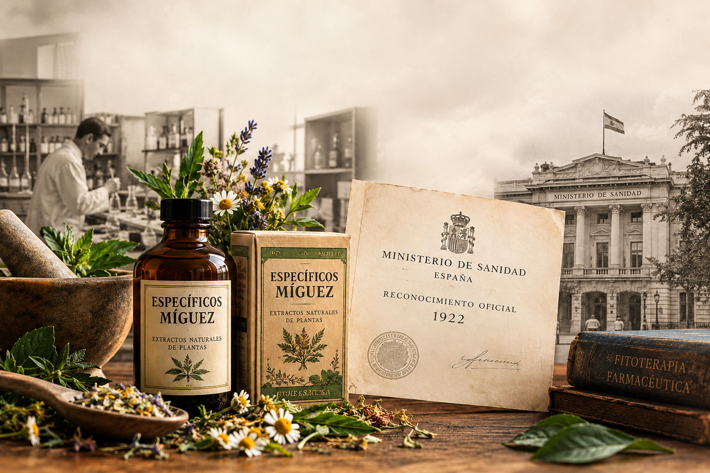

San Faustino constituye una figura singular por haber sabido articular de manera virtuosa la fe religiosa con la investigación científica rigorously orientada al bienestar público. Sus estudios abarcaban la botánica, la química analítica y el estudio de las aguas mineromedicinales.
Análisis de las aguas de Sanlúcar
En 1885 fue destinado a Sanlúcar de Barrameda, lugar donde constató la situación de abandono y la falta de acceso a la educación que sufrían las niñas y jóvenes de la localidad, una realidad que lo conmovió profundamente y lo impulsó a buscar soluciones concretas
Los Específicos Míguez y el Laboratorio
Sus fórmulas basadas en extractos de plantas naturales dieron origen a los populares Específicos Míguez. Años más tarde, el Laboratorio Míguez obtendría el reconocimiento oficial del Ministerio de Sanidad de España en 1922. En el contexto histórico de la época, estas formulaciones representaron un aporte relevante dentro del desarrollo de la fitoterapia farmacéutica.
